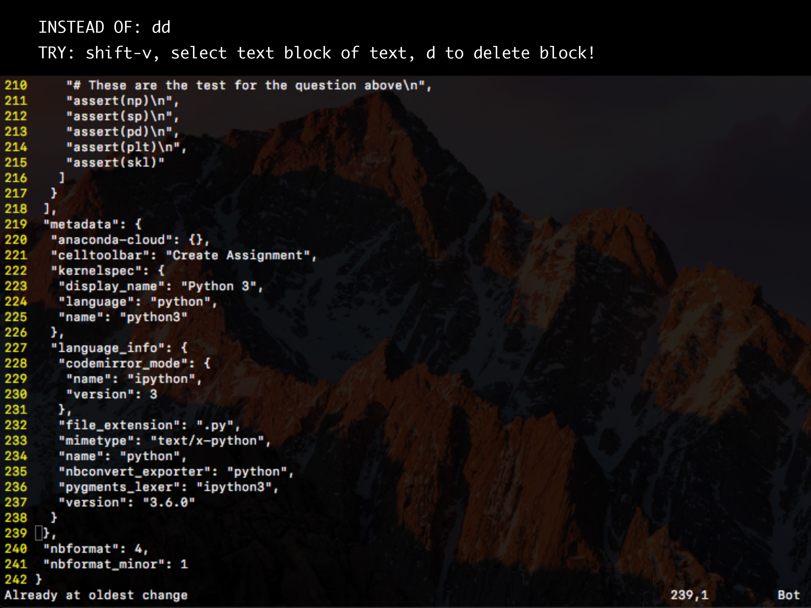
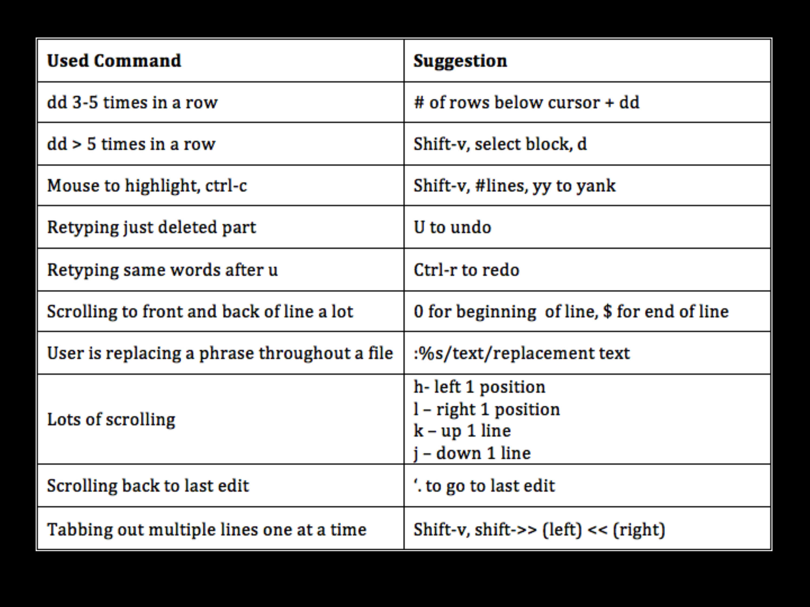

Domain: Vim
Task: The user (me) wants to get better at using vim commands to speed up and simplify processes when programming. This is difficult to do since it usually requires stopping during an assignment to look up a new command. This interface (vim add-on) allows me to get vim suggestions in real time as I am programming in a simple and non-distracting way.
Video:
PDF of Prototype:



